这本书对于B端产品扫盲来说还是不错的
B端产品概述
B端产品有哪些方向
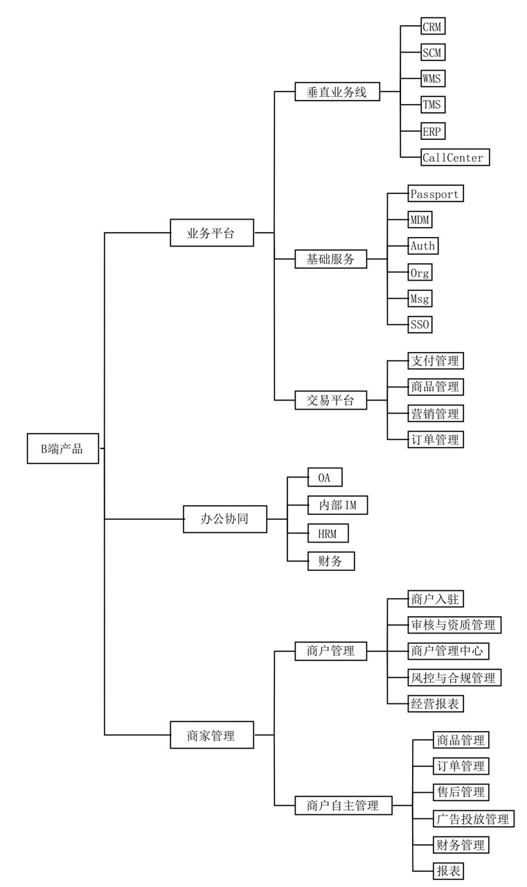
B端产品建设概述
B端产品的总体建设流程
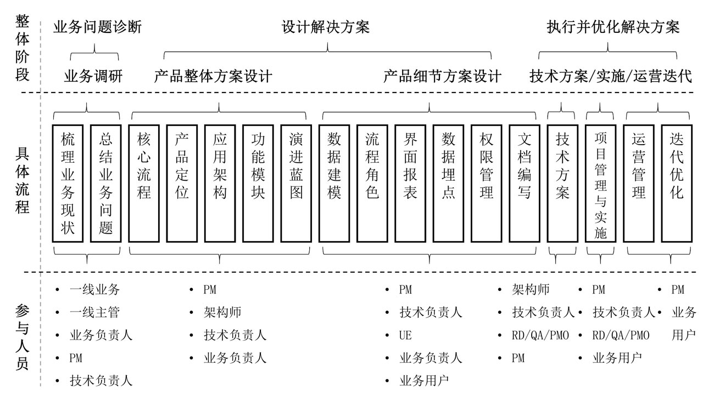
产品定位：明确该产品有哪些子系统，分别支持哪些业务流程和业务版块。
应用架构：考虑该产品和公司现有系统的融合关系。
功能模块：基于对业务的理解，抽象出该产品的具体功能模块。
演进蓝图：根据业务优先级与发展策略，制订实现各功能模块的计划和节奏。
数据建模，也叫业务建模或领域建模，是细节方案设计中最重要的环节，是保证产品设计严谨可行的关键工作。只有基于对业务的理解，抽象出合理且灵活的数据模型，才能设计出有持续灵活性和扩展性的应用系统。
角色与流程设计会涉及业务团队的组织架构和岗位编制，需要产品经理与业务负责人一起讨论决定。
界面与报表是业务用户直接看到的部分，在设计时最好能提供可以体验的交互界面，让业务用户提前感受并反馈意见，减少不必要的返工。
技术方案：产品的整体方案、细节方案都设计好后，就需要技术人员做技术方案设计了，从而保证软件系统在正确的技术选型和合理的技术架构下进行编码开发工作。
项目管理与实施：完善的项目管理机制可以保证实施环节顺利进行；相反，如果项目管理混乱，任意变更需求、扩大项目范围，就会导致项目无限延期。
运营管理：新系统上线后，产品经理要和业务人员一起参与产品的运营迭代工作，包括宣传、推广、使用效果分析、问题和反馈意见的收集，以及持续的迭代优化。
迭代优化：对于迭代优化工作，B端产品也有自己的特点，我们需要管理好需求、分配好研发资源、选择合适的迭代模式。
B端产品与C端产品建设流程对比
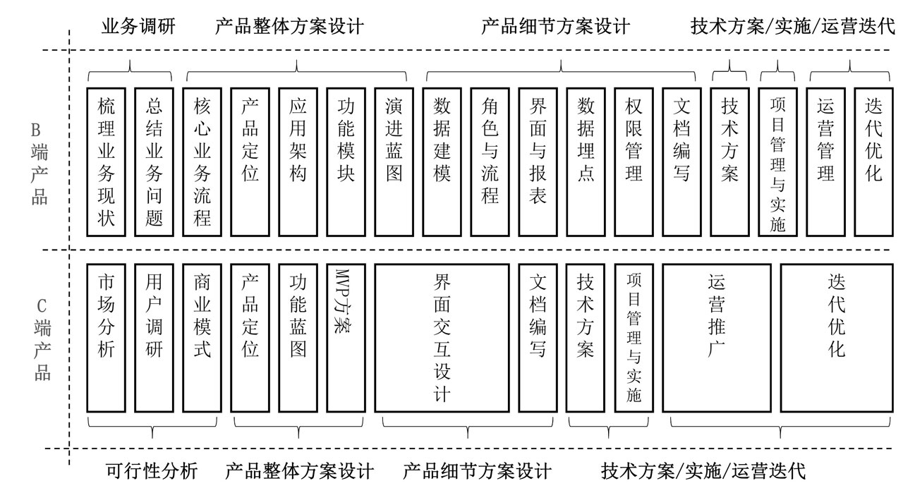
设计起点不同：
B端产品是为了解决业务问题而设计的，设计的起点是进行业务调研，研究业务问题。
C端产品要实现公司商业模式的落地，承载着公司的商业目标，设计的起点是对商业模式本身的分析与研究，包括市场分析、客户群分析等。
MVP不同：
B端产品要支持业务整体运作，所以在选取最小功能集合时，即便再简化，也要保证一个核心业务流程的运转，因此B端MVP往往是一个具备一定复杂度的系统，不可能是一个或几个功能点。
C端产品需要解决用户的痛点，需要挑选一个核心痛点去打动用户，如果核心痛点定位错误，就会导致验证失败。所以在选取最小功能集合时，C端产品要聚焦用户的核心痛点，C端MVP可能只包含一两个功能点。
细节设计不同：
B端产品面临复杂的业务场景和用户场景，因此进行细节设计时，必须关注建模、抽象、角色、权限等问题。
C端产品面临的场景相对单一，并且使用者是相对独立的单个用户，因此不用关心角色、权限管理，而要关注用户的体验，需要在交互设计上投入很大精力。
运营依赖不同：
B端产品上线后，要进行全员宣导培训，产品运营工作相对简单。可以说，B端产品上线后肯定有用户使用，因为公司会要求自己的业务团队使用新产品。
C端产品上线只是走完了万里长征的第一步，接下来需要运营团队进行持续推广，并且通过快速迭代迅速优化产品，响应用户需求。可以说C端产品上线后还要靠运营团队继续奋战，才可能走向成功。在图3-2中，我们将C端产品运营迭代的过程绘制得更长一些，以体现运营工作对C端产品的重要性。
B端产品的业务调研
B端业务调研流程
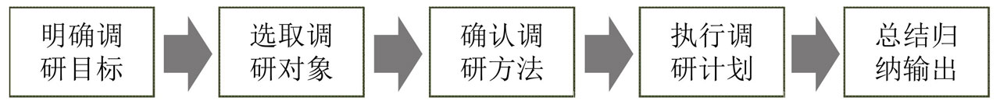
选取调研对象
针对高管，可以了解业务战略定位、战略目标等信息；针对经理或负责人，可以了解业务的管理思路、经营思路等信息；对于一线业务人员，可以获取作业过程、操作细节等信息。
B端业务调研的目的和分析框架
目的：
梳理业务现状
总结业务问题
分析框架：
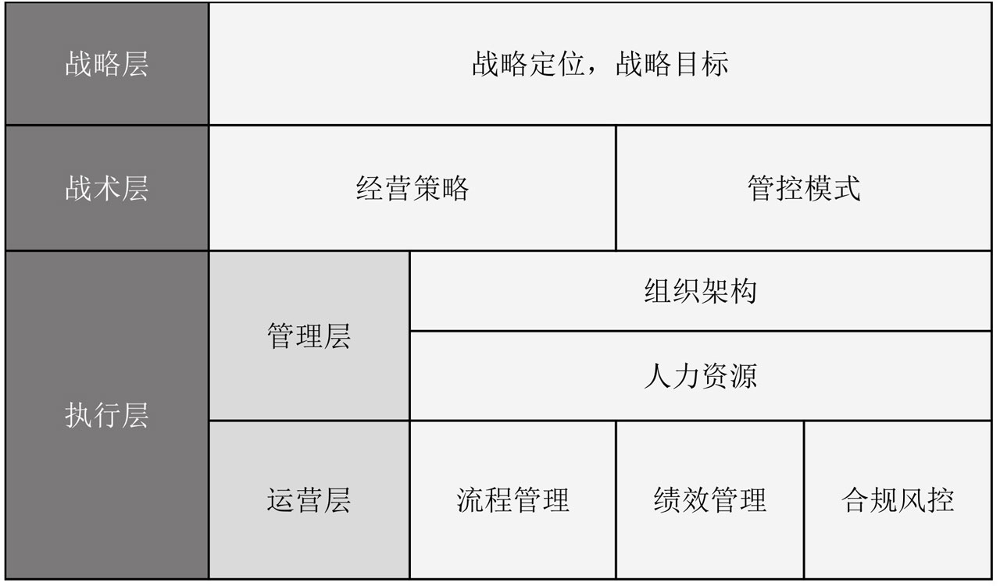
战略层
业务调研首先要明确该项业务在公司中的战略定位，因为战略定位会决定具体的经营策略，并最终影响产品方案设计。理解战略定位、战略计划，可以在产品方案设计的关键点上做出正确选择。
战术层
经营策略
经营策略，通俗来讲就是做买卖的思路，包括客群定位、定价策略、营销策略、渠道管理策略、供应链管理策略等，这其中的每一个主题都涉及庞大的知识体系，产品经理需要扩充各个领域的知识，最好对这些版块都形成基本的认知，这会对工作的顺利开展有帮助。
管控模式
管控模式是指集团对下属企业的集权、分权管理策略，也可以指总公司对分公司的运营管理策略。不同的管控模式所需的配套管理系统当然大不相同，因此这也是B端业务调研需要弄清楚的事项。
执行层
管理层
在明确了经营策略、管控模式等基本方针后，需要梳理组织架构关系，以便对组织架构做出优化；还需要明确人力资源计划，从管理角度保障上层策略的落地。这是业务调研的又一个目标。
运营层
接下来就是明确具体业务流程、绩效管理、风险控制等更加细节的规则，以便在实际运营中推进上层策略的落地。其中，梳理具体业务流程是理解并掌握业务的重要途径，同时也能理清楚人员、岗位、职责的关系。流程合理会让管理和运营提效、风险可控，这也是B端产品的重要业务价值之一；流程不合理，会导致成本增加、服务质量降低。
B端产品与C端产品业务调研的区别
调研目标不同：
B端调研目标：分析业务现状和业务问题，为方案设计提供支撑，最终解决企业的业务问题，提升运转效率。
C端调研目标：获取真实有效的用户需求和体验感受，以便后面结合用户的需求、痛点设计解决方案，最终实现商业诉求。
调研对象不同：
B端产品的目标用户是一个组织或机构，所以调研对象要涵盖组织机构中的不同人员，从高层管理人员到一线执行人员，关键角色要全部覆盖。
C端产品的目标用户是独立的个体，所以调研对象一般都是个人，主要是基于用户细分和用户画像的代表性用户。
调研方法不同：
B端产品的竞品分析则是选做的，因为不同公司的业务流程、模式都不一样，需要的系统也不同。并且如果真的做，难度比较大，因为我们很难从公开渠道获取、分析竞争对手的业务运营管理机制。
C端产品必须做竞品分析，因为将来需要和那些已经存在的同类产品瓜分用户。C端产品的竞品分析做起来比较容易：作为普通用户体验各个竞品，就可以写出一份完整的竞品分析报告。
B端产品的整体方案设计
B端产品的整体方案设计需要遵循自顶向下的设计思路，可以依次设计核心业务流程、产品定位、应用架构、功能模块、演进蓝图，从抽象到具体，逐步勾勒出B端产品的轮廓。
核心业务流程
从核心业务流程切入产品设计，是开展整个设计工作的非常好的起点。核心业务流程代表业务的主干脉络，需要思考业务的各个参与方、涉及的系统。
产品定位
产品定位是对产品概要性的总结和陈述，简明扼要地描述产品对业务的支持范围，或总体的功能目标。产品定位要说清楚产品针对谁提供什么支持。
应用架构设计
在设计一套新系统时，必须考虑如何和公司现有系统架构融合，不同系统的模块之间如何衔接。
功能模块设计
这个系统应用于哪些业务场景？用户可能在系统中做的操作有哪些？通过思考这些问题来抽象出需要具备的功能模块。产品经理设计的功能模块代表了其对业务本质诉求的理解和提炼，蕴含了他对业务、系统未来发展的期望。
演技蓝图设计
但是我们不可能一次实现全部功能，而要根据业务优先级，拆分成几期来完成，所以接下来需要做减法：确认产品的功能规划与实现节奏，就是常说的演进蓝图（Roadmap）
B端产品的细节方案设计
B端产品的细节方案设计包括业务数据建模、页面流转设计、界面设计、权限设计等，这些都是产品经理的必修课，即便没有经历从0到1的设计过程，也会在日常的迭代工作中经常接触。
业务数据建模
业务数据建模也叫实体建模、领域建模，或业务对象建模，是指针对业务特点，归纳并设计对应的底层数据模型的过程
- 组织结构树
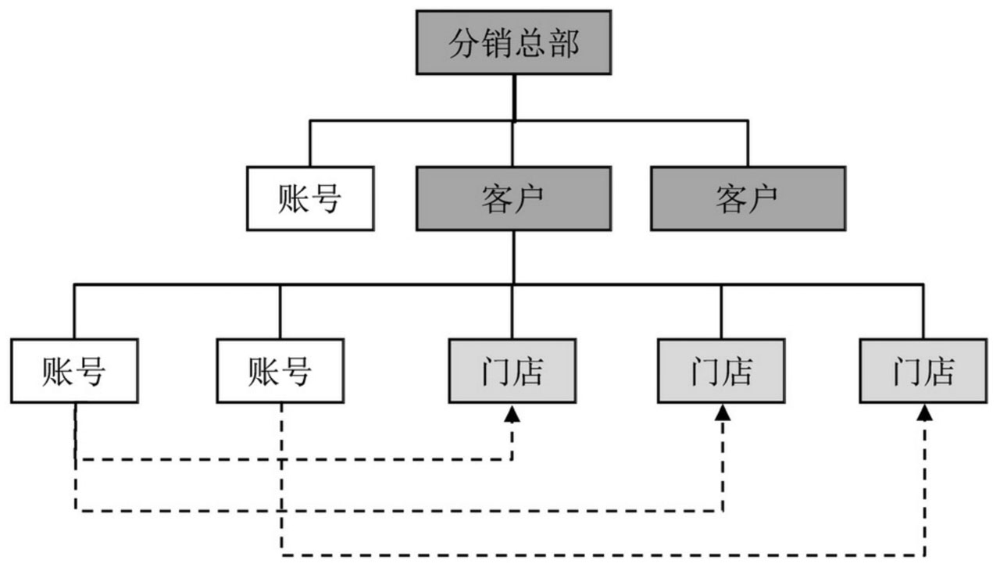
- ER图
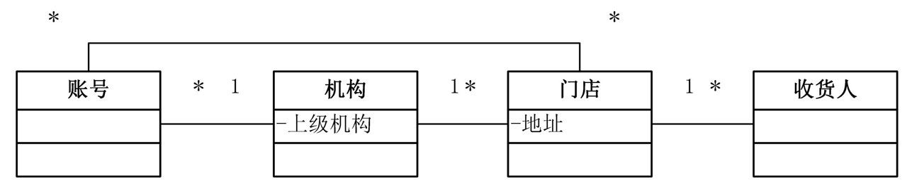
业务数据建模能力体现的是设计人员对客观世界的抽象描述能力，只有对业务本质理解透彻，再结合积累的软件设计经验，才能抽象并构建出合理的业务数据模型。
流程和角色
- 业务流程图
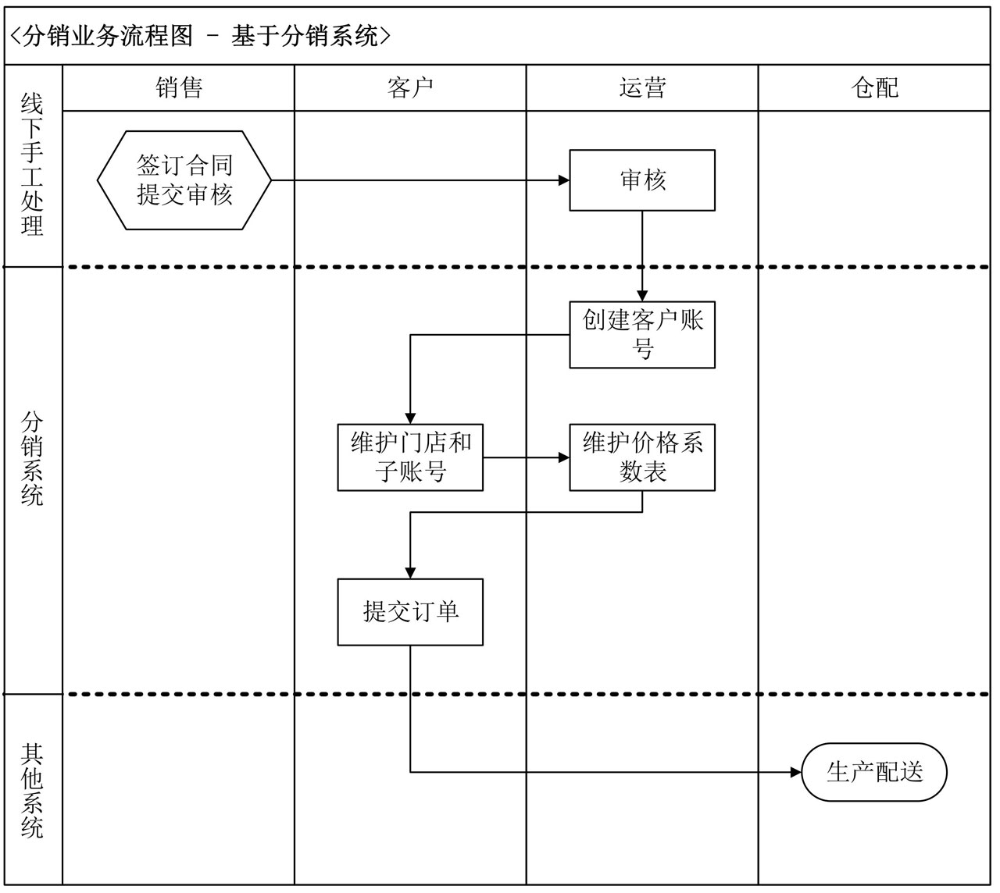
- 页面流转图
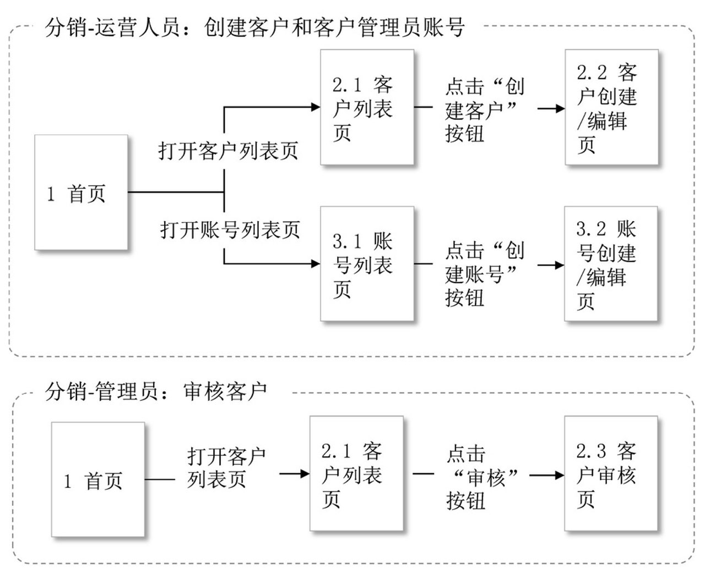
界面设计
尼尔森十大可用性原则
反馈原则（Visibility of system status）：系统应该在合理的时间、用正确的方式，向用户提示或反馈目前系统在做什么、发生了什么。
隐喻原则（Match between system and the real world）：系统要采用用户熟悉的语句、短语、符号来表达意思。遵循真实世界的认知、习惯，让信息的呈现更加自然，易于辨识和接受。
回退原则（User control and freedom）：用户经常会不小心操作错误，需要有一个简单的功能，让程序迅速恢复到错误发生之前的状态。
一致原则（Consistency and standards）：同样的情景、环境下，用户进行相同的操作，结果应该一致；系统或平台的风格、体验也应该保持一致。
防错原则（Error prevention）：系统要避免错误发生，这好过出错后再给提示。
记忆原则（Recognition rather than recall）：让系统的相关信息在需要的时候显示出来，减轻用户的记忆负担。
灵活易用原则（Flexibility and efficiency of use）：系统的用户中，中级用户往往最多，初级和高级用户相对较少。系统应为大多数人设计，同时兼顾少数人的需求，做到灵活易用。
简约设计原则（Aesthetic and minimalist design）：对话中不应该包含无关的或没必要的信息；增加或强化一些信息就意味着弱化另一些信息。
容错原则（Help users recognize, diagnose, and recover from errors）：错误信息应该用通俗易懂的语言说明，而不是只向用户提示错误代码；提示错误信息时要给出解决建议。
帮助原则（Help and documentation）：对于一个设计良好的系统，用户往往不需要经过培训就能轻松上手使用，但是提供帮助文档依然是很有必要的。帮助信息应该易于检索，通过明确的步骤引导用户解决问题，并且不能太复杂。
报表设计
业务报表的核心价值是掌握事实、发现问题、分析原因、产生对策。产品经理要和业务人员一起，关注完整的体系化指标建设，设计有实用价值的报表。观察、分析问题的视角和思路是报表设计的核心，绚丽的交互只是次要的外在。
报表设计与应用流程
构建分析体系
构建分析体系之前，首先要明确分析目的，即需要通过分析发现哪些方面的问题；然后思考该采用什么方法来识别、诊断这些问题，其中可能的困难是什么。构建分析体系必须建立在对业务的深刻、准确理解之上，并且要和一线管理团队多沟通，可能很多问题的分析框架和思路已经被一线工作者发现并有效实践了，一定要善于发掘并参考、借鉴。
定义观察指标
理清了分析框架和思路，下一步要确定观察指标，设计具备明确业务含义的指标来考量业务。一般会先从大的方面拆分出几方面的观察指标，然后考虑是否将指标进一步拆解为二级指标，甚至三级指标，从而在更精细的维度观察、分析业务，更准确地反映业务特征。
设计呈现形式
确定了观察指标后，我们要思考以什么形式呈现这些指标，以便用户能够准确、快速地理解、掌握指标以及变化特征。例如，是采用数据表格还是柱状图呢？在这个环节，产品经理要和实际用户多讨论，寻找最佳的呈现方式。
跟踪指标变化
管理要用数据说话，报表数据就是诊断和决策的依据。管理人员要认真对待、分析报表中各种数字的变化、波动。如果只是走马观花地浏览报表，看不出任何问题，报表就失去了意义。作为一名管理人员，必须对数字非常敏感，能够快速地感知并解读数字背后的变化和问题，这是出色的管理人员必须具备的素质。
分析变动原因
如果指标发生了明显的波动，需要跟进分析波动的原因，分析工作可以由数据分析师完成。
业务团队最好每周分析上周数据走势、变化背后的原因，以便及时、准确地掌握业务变化情况及原因。
跟进问题处理
分析出问题后，下一步当然是给相关部门或人员安排工作，解决问题，这也是报表设计的初衷。
报表引擎
采用报表引擎可以大幅提高企业对报表类产品形态的开发速度，非常经济有效。市面上有大量收费或免费开源的报表引擎可供使用。除非有很特殊的呈现需求，其他情况都强烈推荐采用成熟的报表引擎。
常见的报表引擎表样
- 明细报表
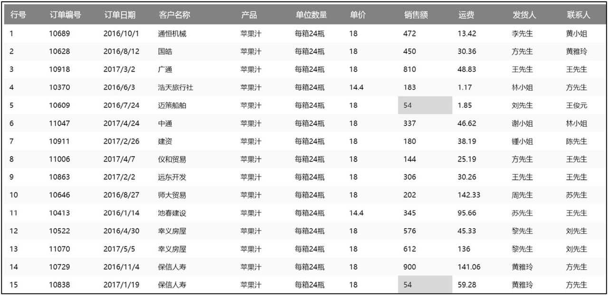
- 动态仪表盘
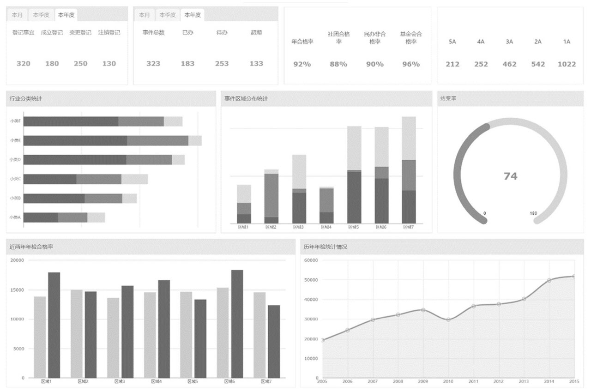
- 套打报表
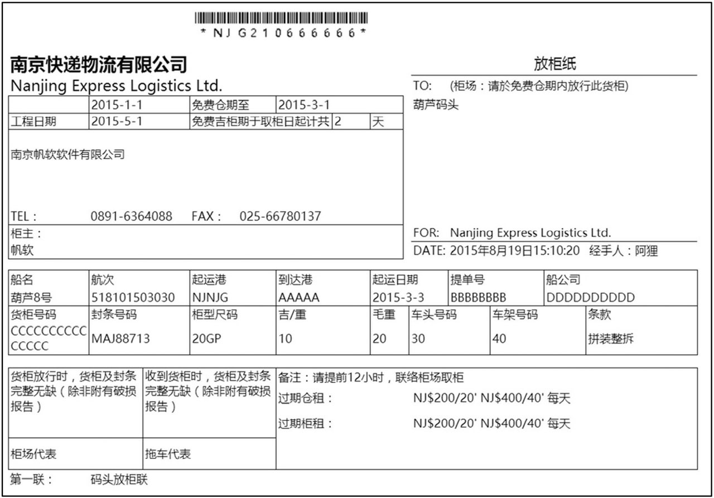
报表设计的建议
聚焦业务分析本身
不要急于线上化
上线后不要急于推广
理解掌握数据仓库原理
数据埋点
对于B端产品来讲，数据埋点是考核产品使用程度的一个重要依据，也是业务用户行为分析、产品分析、产品改善的重要参考数据来源。
B端产品与C端产品数据埋点的区别
诉求不同：
B端产品，尤其是业务系统，往往借助埋点观察并研究用户对各项产品功能的接受程度、使用情况，以及用户的操作习惯等，从而进一步评估功能设计是否合理，是否帮用户提高了效率等，为持续优化提供依据。
C端产品通过数据埋点来持续优化设计。C端产品对交互设计要求高，非常重视用户体验。因此C端产品经理和运营人员要想尽办法持续优化功能，而优化的前提是细致、全面的数据埋点和分析，这样优化方向才是明确的。
方案不同：
B端产品多为PC端Web站点，在Web埋点工作中，很多时候只需要分析页面级别的流量和行为就足够了，所以只需要部署一次公共Java Script代码片段就完成埋点工作了，然后就可以做基本的分析监控了。当然，默认的埋点只能记录URL的访问、跳转等数据，如果想记录视频播放、按钮点击、文本框录入等行为，则需要针对事件做更细致的埋点监控。
C端产品多为移动端App版本，用户的操作都在屏幕的方寸之间完成，保证良好的用户体验非常重要，因此C端产品对各种点击、交互行为的监控非常严格，会对所有交互行为做细致的埋点，以便全面掌握用户的动作，并进行准确优化，工作量会大很多。
权限设计
这是业务系统设计中一个非常重要的环节，它反映了设计人员对整个业务体系中岗位和流程的理解。权限设计的前提是合理的角色设计，在此基础上，只需要明确不同角色能访问哪些页面、能看到哪些数据以及能做什么操作即可。在界面设计完成后，就要做相关的权限设计了
功能权限设计
设计页面的功能时，要考虑页面中的各个功能点是否要做权限控制。相应地，在每个页面的设计文档中，除了描述页面功能本身，还需要描述系统中不同角色对页面中的各个功能点的访问权限。我们通常用权限表来描述权限、角色的配置关系，这张表在产品设计阶段就需要准备好。
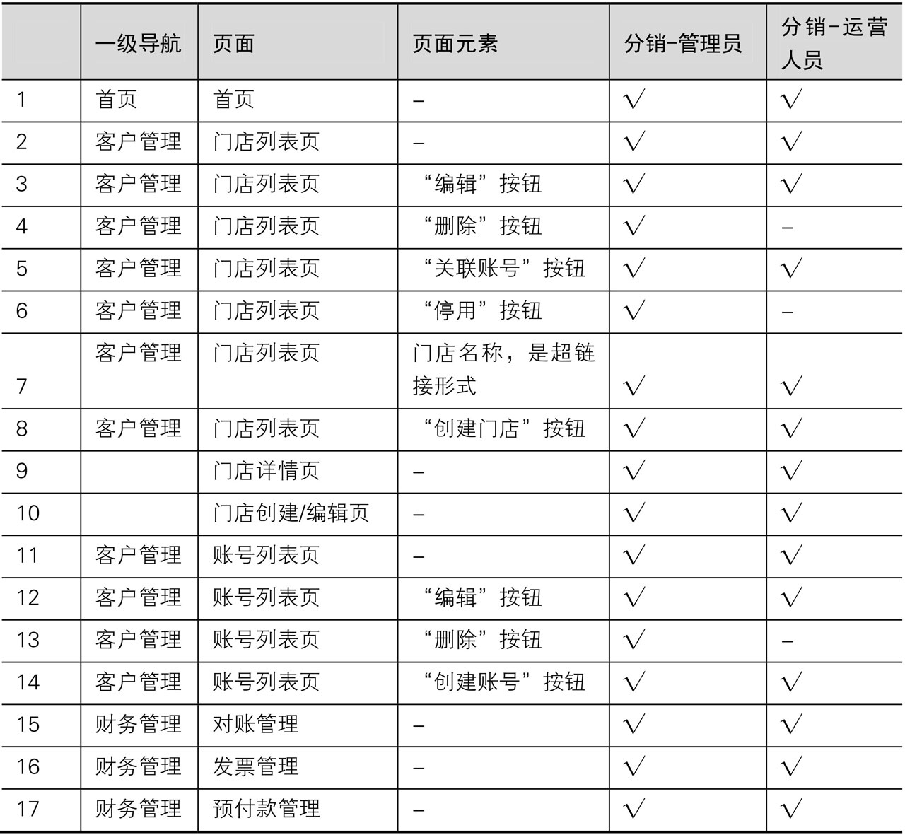
RBAC权限模型
实际上，软件系统中典型的、完整的功能权限管理，除了页面、功能点、角色，还涉及用户组、资源等概念。关于完整的功能权限设计，最经典的理论是1995年由计算机科学家Ravi Sandhu提出的RBAC（Role Based Access Control）模型，描述了一套用户、角色、权限组的设计理念，在业务系统设计中被广泛采用。如果产品经理需要设计功能权限管理系统或模块，就必须理解RBAC权限管理模型。
RBAC模型可以简单地抽象为ER图（图6-43，关于ER图的介绍详见6.8.1节），即每个用户都要被赋予一个或多个系统角色，每个系统角色都对应一个明确的权限集合，包括对菜单、页面元素等资源的访问和操作权限。RBAC模型中还引入了用户组的概念，即如果用户较多，可以对用户进行分组，将角色和用户组进行关联。当有新用户时，只需要设置其所在的用户组，就会将用户组关联的权限赋予新用户。如果用户角色需要批量调整，只需要调整用户组和角色的关联关系，而不用重新变更每一个用户和角色的对应关系。
数据权限设计
角色在页面中能查到的数据范围，叫该角色的数据权限。所谓能查到的数据范围，不是指能看到的数据字段，而是指能查出来的数据集合
方案一，通过组织机构树控制。该方案根据账号所在组织机构树中的节点位置，来判断能够查询的数据范围。这种方式最复杂，但最灵活，能够支持各种复杂的业务数据权限诉求。
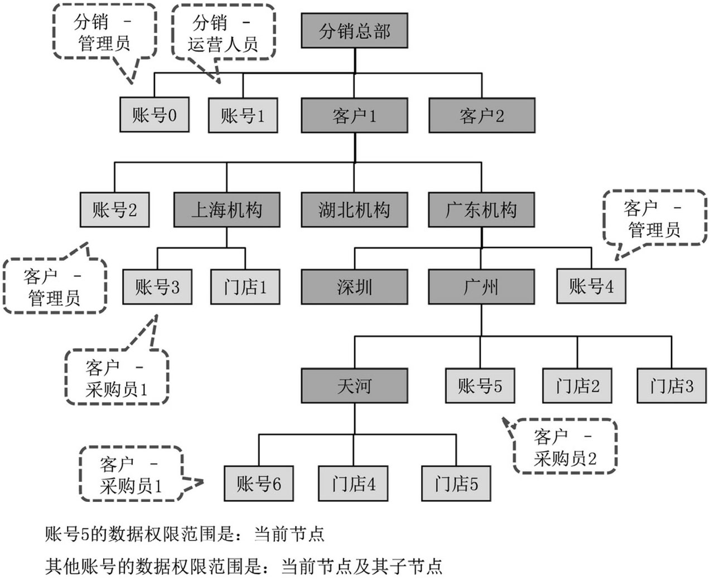
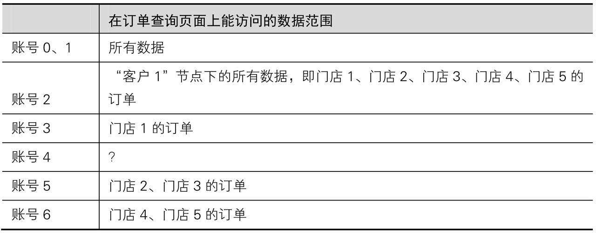
文档编写与管理
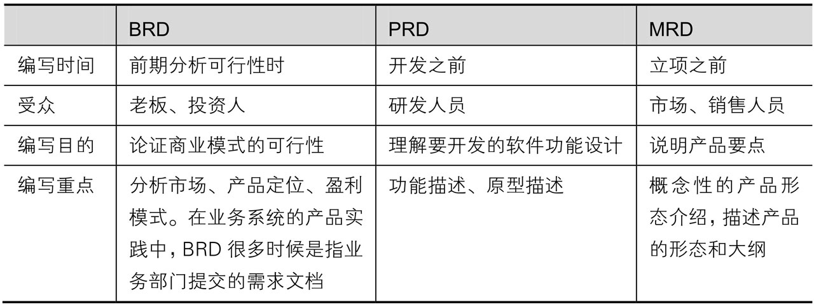
在B端产品领域，BRD一般由需求方填写，用于提交需求；PRD由产品经理编写；MRD在B端产品中鲜有涉及。
BRD
产品设计的好坏，首先取决于需求的质量。如果需求质量不高，产品设计再用心，也难以产生价值。实际上，很多需求都只是需求提出者的灵光一闪的想法，并没有经过严谨的思考。对于B端产品，尤其是业务系统，业务方一般都有需求管理团队，负责调研、整理业务需求，提交给产品经理。产品经理首先需要对需求进行判断，如果发现需求质量不高，就需要和业务方反复讨论，判断需求的真实性。
PRD
PRD修改记录
项目背景
项目收益目标
项目方案概述
项目范围
项目风险
术语和缩略语
参考文献和引用文档
功能需求
产品框架概述
系统框架图
数据模型图
业务流程图
业务用例图
状态机图
产品需求详解
异常情况的处理方案
数据埋点
角色和权限
运营计划
待决事项
UML和常用图表
类图
用例图
对象图
时序图
协作图
状态机图
活动图
组件图
部署图
B端产品经理与技术方案
产品经理是否要懂技术
懂技术的产品经理在设计产品方案时，能够在一定程度上预估技术实现的可行性和实现成本，或至少能具备基本的认知，知道什么时候、什么情况下需要和技术人员提前沟通讨论，从而保证产品设计合理可行，既能提升合作效率，也能赢得技术人员的尊重和信任。
避免产品过度设计
所谓产品过度设计，是指设计的某些产品功能价值不大，甚至没有意义，但是开发工作却很复杂、很耗时。产品过度设计的现象经常发生，尤其是在前端交互设计上。很多初级产品经理会误以为界面设计只是画几张图，而没有考虑背后实现逻辑的复杂性。
避免技术过度设计
所谓技术过度设计，是指技术人员设计了没有必要的代码灵活性和复杂性，而后续的业务根本用不到这些特性，宝贵的时间和资源被浪费。产品经理有时需要和技术人员进行深入沟通，分析业务情况，帮助技术人员砍掉不必要的灵活性、扩展性设计。
与技术人员沟通顺畅
对于研发人员来讲，如果合作的产品经理能在同一个频道、用同一套语言进行沟通，是非常舒服惬意的事情，可以增进好感和信任感。相反，如果产品经理对一些基本的技术常识都不理解并且不愿意理解，只是一味地强调自己的设计多么合理，就会非常容易和研发人员产生冲突。
预判需求的可行性
如果产品经理具备足够多的技术知识及经验，在接到一个需求后就可以很快地判断技术实现的可行性和成本，并根据业务诉求快速给出可行的解决方案。否则就需要拉着技术人员和业务人员一起来回讨论，降低效率。
评估工时合理性
完成产品方案设计后，在和开发人员沟通时，产品经理要站在业务人员的角度，和开发人员讨论工时评估是否合理。
B端产品经理的技术知识要求
具备基本的技术知识体系
理解一门编程语言
掌握并使用SQL
了解网络通信等计算机常识
了解程序设计的MVC范式
MVC是Modeling、View、Controller的缩写，代表软件设计的分层理念。Modeling指数据模型，View指前端交互视图，Controller指业务逻辑，MVC模式下的软件分层结构如图7-4所示。任何一套软件系统运作的本质都是相同的：用户在前端交互层操作后，系统通过业务逻辑层处理数据层的数据。
熟悉接口与调用模式
接口之间的调用模式分为同步调用模式和异步调用模式两种
在同步调用模式下，接口的调用方会一直等待被调用方返回执行结果，除非调用超时
在异步调用模式下，接口调用方给被调用方发出指令，但不会等待结果
理解软件工程的“搭积木”设计
如果不能将软件分解成像积木那样的小模块，而是焊死的一块铁板，那么系统将彻底丧失灵活性。
在技术体系中，有两个非常重要的概念在支撑着接口化、服务化的设计理念的落地，即SOA（Service Oriented Architecture，面向服务的架构体系）和微服务。
企业的各个软件或产品并不是独立的、割裂的，而是深度结合、互相支撑的。架构的理念在高阶的B端产品设计中非常重要，同时B端产品的设计体系和技术架构也有着一脉相承的设计思路。理解技术架构对设计产品架构大有裨益。
掌握数据库与SQL
在业务系统设计中，建模工作是最重要的，模型的好坏将从本质上影响系统的灵活性和可扩展性；而设计数据库表结构正是对模型设计的一种落地实现。如果你能够理解模型、ER图，再进一步理解数据库表结构，那么你对业务系统的技术实现会有更加深刻的理解和认识，这对产品设计工作会有很大帮助。
B端产品的项目管理与实施工作
如何对B端产品做好项目管理与实施工作
挑战
容易发生跨端（跨系统）
项目周期长
如何协调并推动跨段协作
明确项目收益价值
找到KP并积极游说
保持强的推动力与执行力
如何把控项目进度
细化工作，明确交付
通过机制把控进度
编写内容清晰的项目日报或周报
保持足够责任心
B端产品的运营管理
B端产品运营方向
Saa S方向，该方向的运营岗位偏销售、BD职能，属于销售管理和客户开发的范畴，不在我们的讨论范围内。
双边市场的供给端运营方向，例如商家运营、店铺运营，这种运营岗位的工作内容和C端运营相似，我们不在此赘述。
针对内部业务系统的产品运营方向，本章讨论的B端产品运营主要是针对这个方向的。
B端产品运营岗的工作内容
产品功能推广培训
问题解答处理
需求采集过滤
项目效果分析
业务诊断分析
B端产品运营与C端产品运营的区别
团队定位不同：
- 对于业务模式较重的互联网公司，B端产品运营是配合业务部门达成业绩目标的支持团队，间接对业绩指标负责；
对于以线上业务为主的互联网公司，C端产品运营是需要对业绩直接负责的业务团队。
工作目标不同：
B端产品运营通过挖掘B端产品能力，帮助业务线提升管理效能、改善核心指标（不同业务线的考核指标不同，例如，销售线可能是销售额，采购线可能是采购成本，配送线可能是配送效率）；
C端产品运营帮助C端产品提升核心指标，常常包括用户量、活跃度、转化率和收入等。
技能要求不同：
B端产品运营人员要掌握相关业务领域的专业知识，例如供应链管理知识、仓储配送业务知识，以及数据分析、文案编写等辅助技能；
C端产品运营人员要具备创造性思维，掌握热点时事和各种新媒体运作方式，具备数据分析、文案编写等多种综合技能。
职业方向不同：
B端产品运营可以成长为某个细分领域的业务专家，例如CRM销售管理业务专家；
C端产品运营可以成长为某个细分行业或产品方向（例如社交领域、电商领域）的运营专家。
B端业务运营岗
工作内容
业务支持
流程管理
策略制定
绩效考核制度制订
培训考核
系统运营
项目管理
合规质检
数据分析
产品经理、产品运营人员、业务运营人员如何高效协作
组织架构决定了汇报关系，进而决定了绩效考核方式。汇报关系、绩效考核方式会影响人做事的动机、行事的方式，以及个人和团队的利益。通过调整组织架构，可以把一股力量拆成互斥的几股，也可以把几股互相较劲的力量凝聚成一股。
B端产品的迭代优化
B端产品的需求管理
需求收集
需求收集的要点之一是，通过各种渠道全面、迅速地收集建议，而且，无论是否采纳，都要给出反馈，例如意见是否采纳、预期的解决时间等，这样才能形成持续的良性互动。
收集到需求后，产品经理不应该简单被动地接受、执行，而要识别需求背后的真实问题、判断需求的价值，这很考验产品经理的判断能力。在日常工作中，产品经理要勤于思考，尽可能地理解业务，以提升自己的判断能力。面对需求时，产品经理可以思考以下问题，帮助自己准确、迅速地判断需求的价值：
这个需求背后的真正问题是什么？
这个问题是否有简单快速的解法？
这个问题的影响面有多大？如果只是个案，是否值得投入精力去研究解决？
如果是共性问题，优先级和紧急程度如何？
需求池管理
为了准确地管理需求内容、跟进执行情况、进行全面的项目管理分析（例如分析研发的工作量、研发效率、业务需求的满足效率等），一套完整的需求池管理模板应该具备很多字段。下面分享我整理的一个比较完整的需求池管理模板，并对每个字段进行具体说明。
业务线
需求类型
主题
内容
来源
需求提出日期
优先级
迭代版本
业务负责人
产品经理
研发负责人
测试负责人
状态
计划上线日期
实际上线日期
前端开始日期/前端结束日期
前端研发工作量（人日）
发版计划
B端产品的迭代管理
迭代中的研发资源管理
在迭代优化过程中，产品经理要充分调动并利用研发资源，通过对人员的合理调配，保障不同项目之间无缝衔接，避免因为时间窗口不匹配导致研发资源闲置。
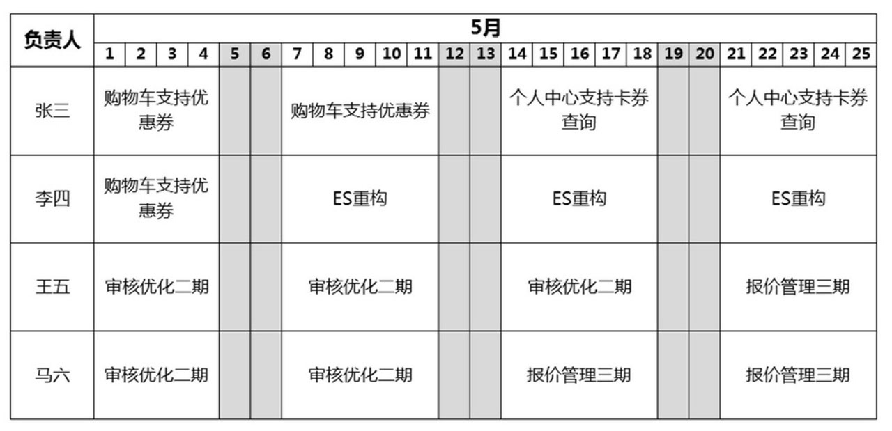
迭代中的技术优化资源
软件的代码需要不断地优化。如果软件升级迭代过程中只做产品功能需求，而不做技术优化，随着功能的积累，软件系统会变得越来越脆弱，运行速度会越来越慢，甚至频繁宕机。因此，在日常的迭代升级中，必须给技术优化预留足够的资源。
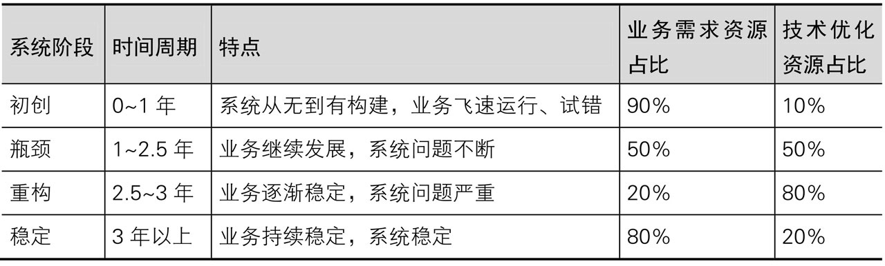
典型的双周迭代模式
所谓双周迭代，即两周完成一个迭代周期，其中，一个迭代周期是指从软件开发到上线的时间。
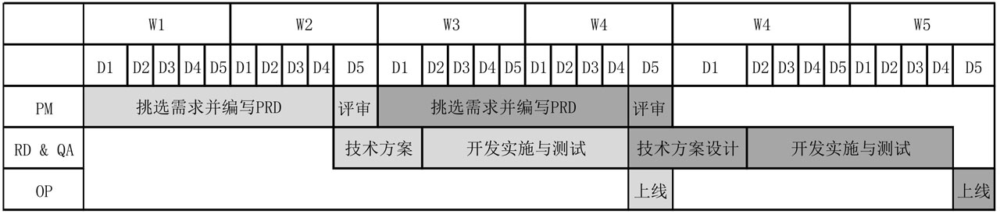
B端产品的数据分析
数据分析的流程
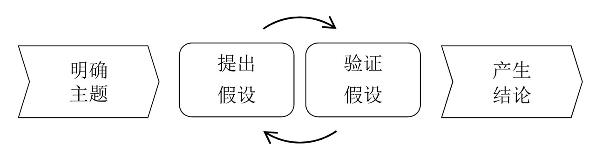
明确主题
任何数据分析工作都需要有一个明确的主题，即数据分析工作的目的或目标。如果没有明确的主题，数据分析工作就会随意发散，无法聚焦。主题可以是封闭的，例如“XXX项目的YYY指标能否符合预期”，也可以是发散的，例如“目前公司供需匹配的矛盾和问题是什么”。
提出假设、验证假设
基于假设去观察、研究数据，判断、验证假设是否正确，在此过程中便会对数据的洞察越来越深刻，产生更加清晰的想法和思路，提出新的假设，从而进一步探查数据，如此往复，离问题真相越来越近。
得出结论
在分析过程中，我们不断地从各个维度（时间、地区、品类）对数据进行观察，在需要的时候进行数据下钻（例子中从区域下钻到销售品类，也可能进一步对蔬菜品类下钻到具体的二级品类）。通过Excel数据透视功能，并结合对数据的可视化处理（数据条），可以让分析工作变得直观、高效、灵活
数据分析的要点
方法工具
统计学：掌握基本统计学常识，帮助自己判断、认识数据特点。例如，要理解方差、均值、中位数、众数等概念。
Excel：Excel具备各种强大功能，足以作为初级、中级数据分析工作者的首选甚至唯一工具。
SQL：掌握SQL可以快速提取原始数据，并完成数据预处理。
数据可视化：在工作实践中，多数情况下都是通过观察图表来发现、识别问题的，采用合适的图表形式，可以让分析更直观、高效，例如通过瀑布图、直方图、桑基图等观察数据特征和变化情况。
计算机数据基础：有的时候我们需要对原始数据进行一些编码处理，这就需要理解一些编码基础知识，例如什么是ASCII、UTF-8、UTF-16、Unicode，如何通过Ultra Edit等软件进行编码处理（例如，有时在Linux环境下运行SQL语句，导出的数据需要进行编码转换才能在Windows环境下使用，如果自己不会处理，就需要每次都求助于人）；此外还要了解计算机常见的数据存储格式，例如CSV、JSON、XML等。
正则表达式（Regular Expression）：正则表达式是一种非常巧妙的、用来处理文本的逻辑公式，在某些时刻，使用正则表达式可以解燃眉之急。
数据分析方法论：基于不同的分析诉求，有很多成熟且经典的数据分析方法论，例如分析C端产品的获客增长模型AARRR、分析客户消费行为特征的RFM模型、分析留存率的COHORT模型，这些方法论中蕴含了成熟的分析思路和手段，是针对各种确定的分析场景的最佳实践。
业务知识
当我们面对一个问题时，很多时候会毫无头绪，往往需要以模糊的感觉和猜测开始分析。然而，只有具备丰富的业务知识，才能产生正确的“模糊的感觉”。业务知识甚至能在难以捉摸或难以定夺之时，给你带来神奇的“第六感”，在潜意识中指引你做出正确的判断。
细心耐心
数据分析报告
报告编写思路
提出论点：报告的开篇要简明介绍背景，以及分析的结论，让人产生兴趣并继续关注下去。如果一开始就介绍分析的细节，估计阅读的人或听众都会摸不着头脑，一会儿就昏昏欲睡。
进行论证：论证过程要有数据支撑，并且数据的呈现一定要专业又易读。人们都喜欢看简明易懂的数据图表，而不喜欢读复杂的数学推演。因此，配有丰富、清晰图表的报告读起来会给人生动有趣感，讲解起来也容易吸引人的注意。
陈述总结：再次阐述并强调结论，加深阅读者或听众的印象。
报告的排版美化
企业级应用架构概述
什么是企业级应用架构
企业级应用架构正是指企业的各个软件系统有机集成在一起的方式。在实际中，我们通过研究企业的业务组织划分方式及经营运作特点，来设计软件系统划分和搭建的方式，同时利用软件模块可抽象、可复用的特点，得到一套适用于企业经营管理发展的软件产品体系结构。
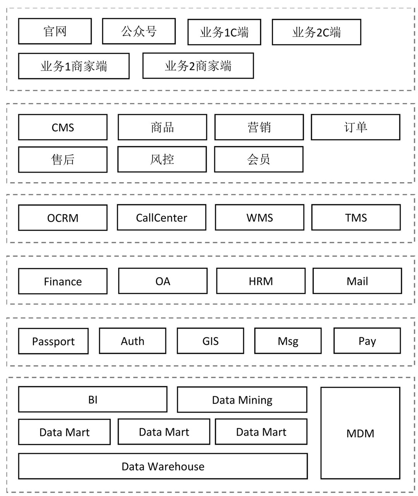